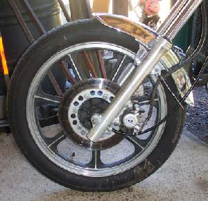
¶ Several people have E-Mailed me, wanting to know how to remove their wheels. At first glance you might say "How simple", but just like computers, it's only simple if you know how. So here are a few thoughts on how to do it. Basically, for a front wheel with a disk brake, you just remove the axle and pull out the wheel. Of course it's never that easy.
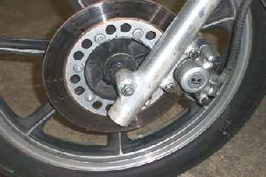 The axle can just go through the fork legs and wheel hub and have a nut on the end. |
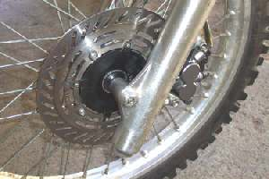 Or it can screw into the fork leg. |
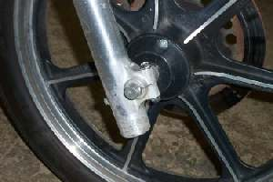 Pinch Bolt with Nut. |
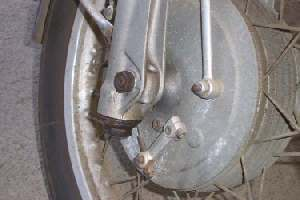 Allen Head Pinch Bolt, screws into fork leg. |
Of course they couldn't just leave it at that so it can also have a pinch bolt (or nut) on one (or both) sides, that pinches or locks the axle to the fork leg. These pinch bolts can take several forms. They can be just a single bolt, like the ones picture above or they can pinch with two or four nuts like the ones below. Loosen or remove the pinch bolts or nuts, unscrew and remove the axle and pull the front wheel. To reassemble simply do the reverse. There will be a gap on the two and four nut types. Usually the gap goes to the rear (tighten fully the front one first, then the rear one) on the two nut type or to the bottom (tighten fully the upper ones first, then the lower ones) of the four nut type. If there is an arrow on it, it usually goes up. Always check the shop manual for the right torque. If in doubt, and you don't have a manual use the standard torque for that bolt size.
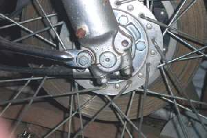 Two Pinch Nuts. |
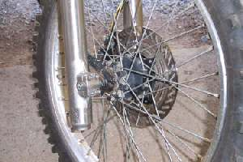 Four Pinch Nuts. |
Once you get the axle snugged up good and tight take a hammer and sharply rap the end of the wrench or ratchet to tighten it just a bit more. You are trying to kind of snap the nut to the final tightness or torque. For some reason, which I don't know, a nut or bolt put in this way will tend to stay tightened better then one that is just slowly tightened.
If you have drum brakes, finger tighten the axle bolts, nuts etc. and then spin the wheel and then lock the brakes and keep them on. Now tighten all the bolts and nuts. This centers the brake shoes in the drum. This makes the brakes work better.
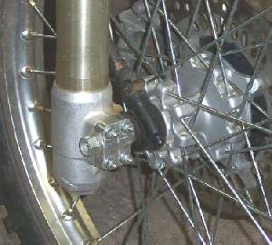 Speedo Drive outside the hub. |
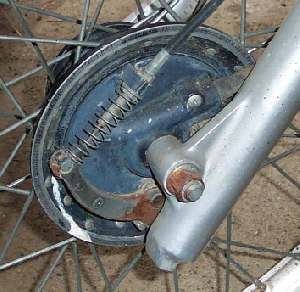 Speedo Drive inside the hub. |
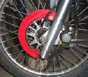

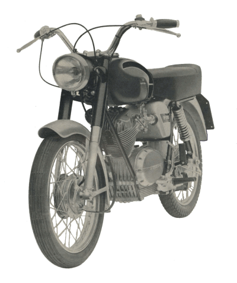 |
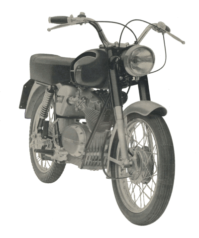 |
Copyright © 1999-2003 dansmc.com. All rights reserved.